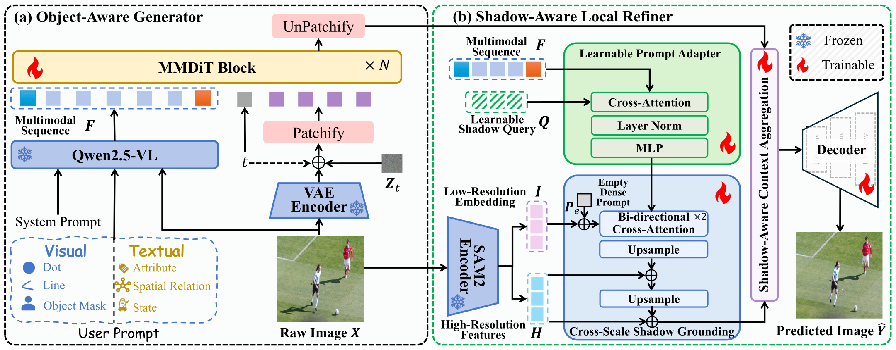
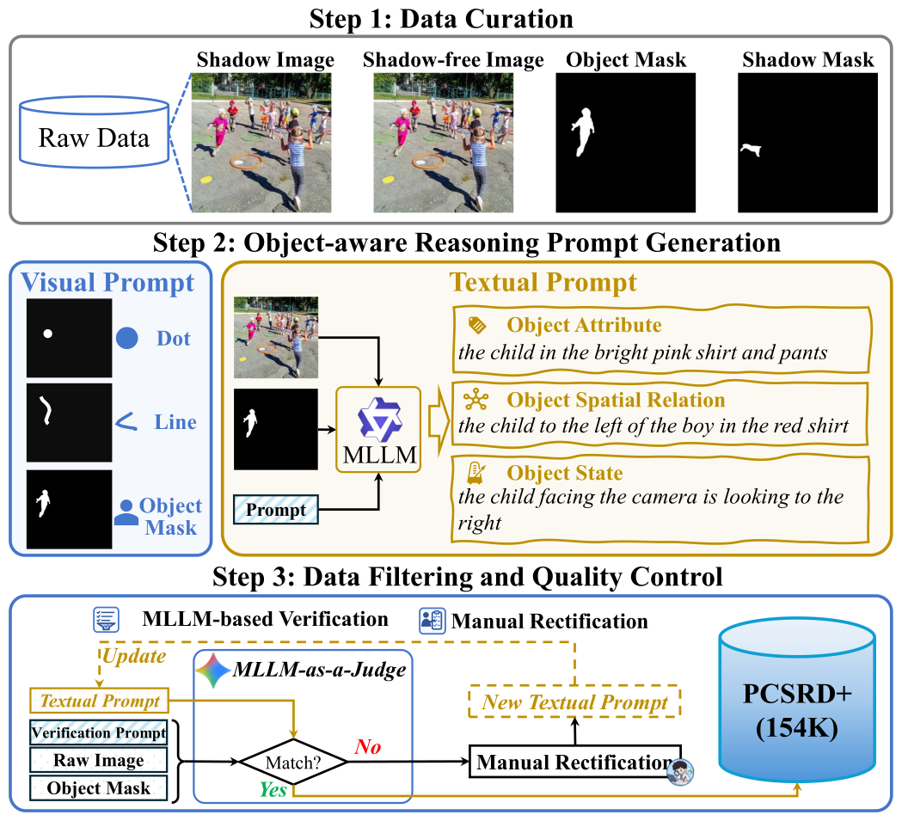
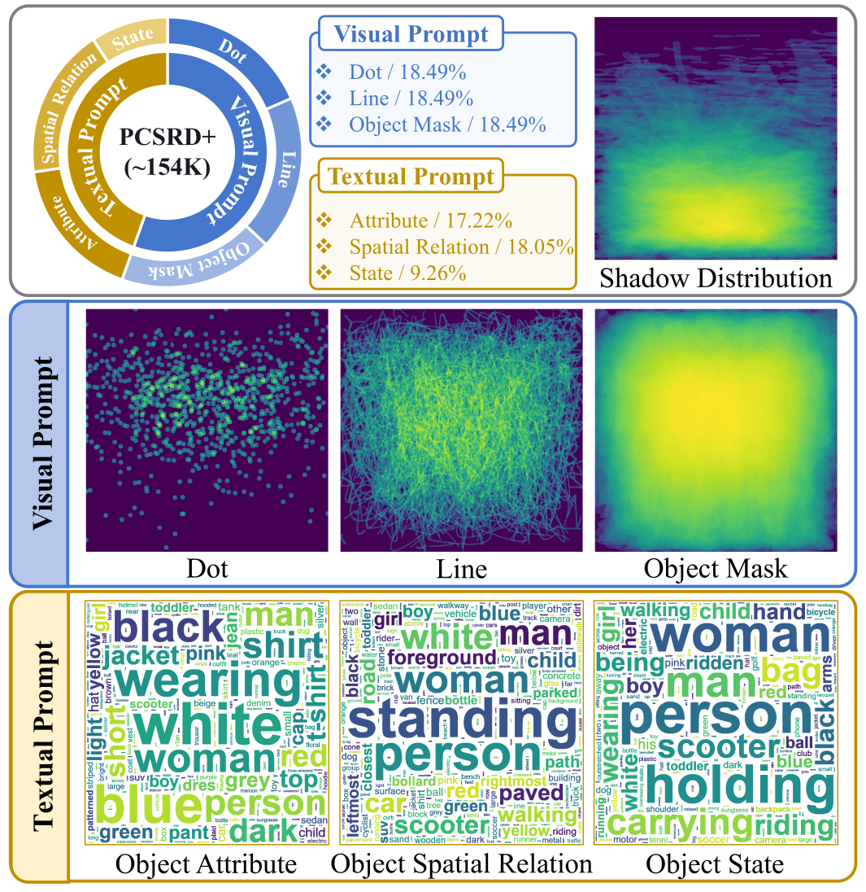
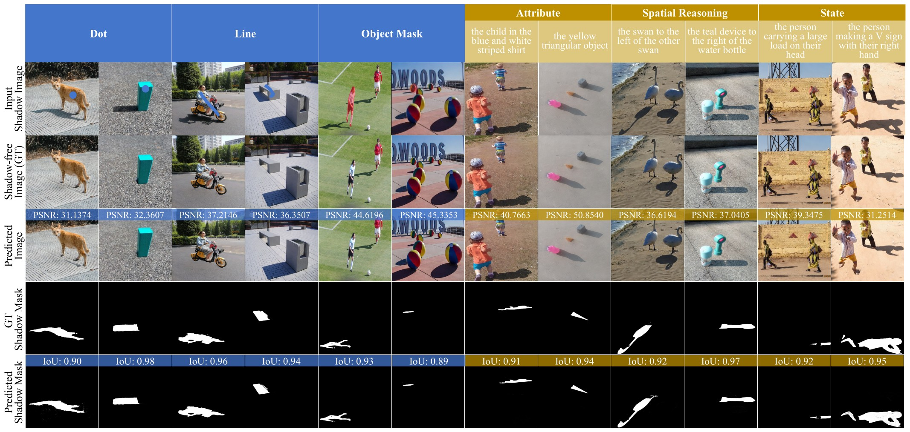
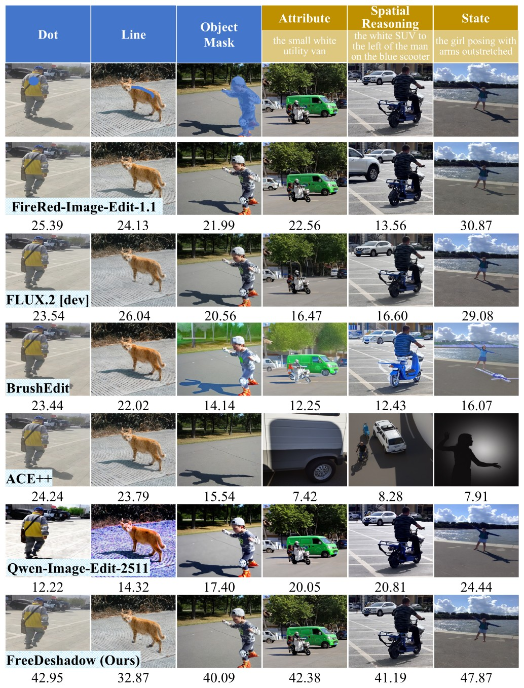
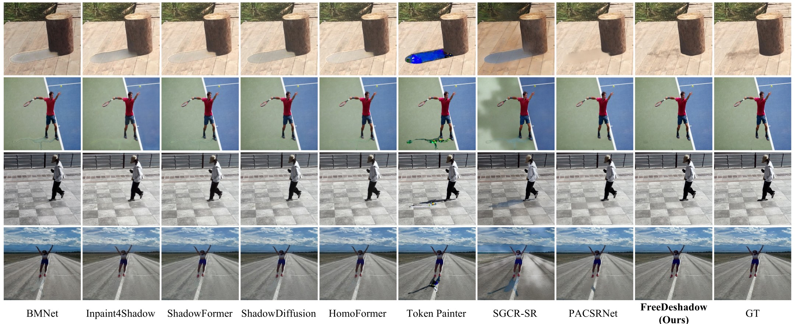
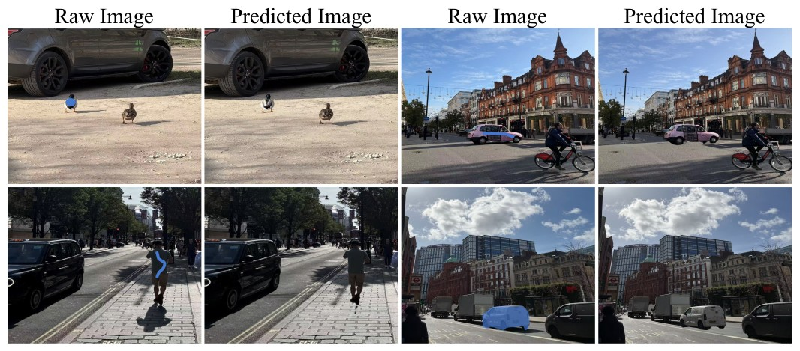
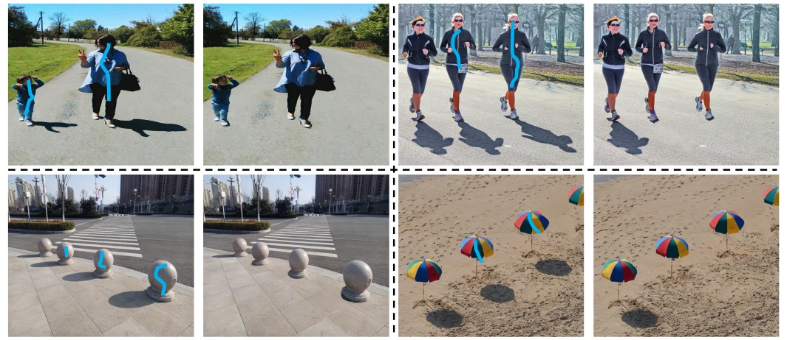
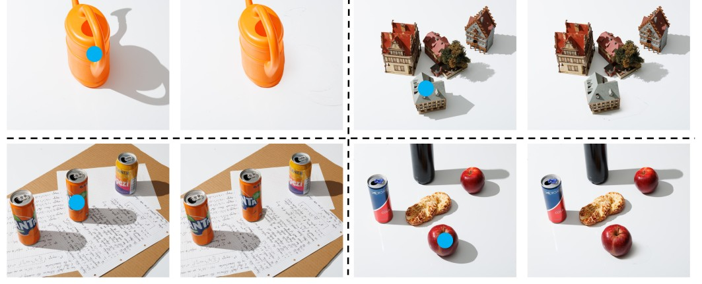
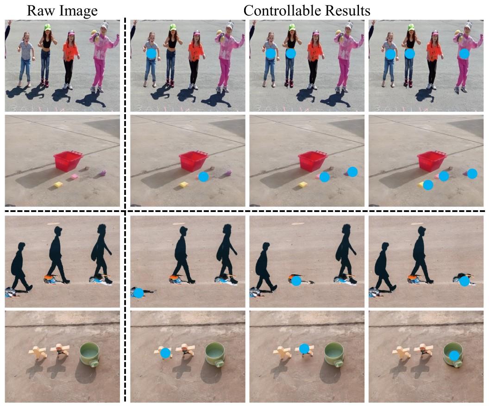

Existing shadow removal methods either perform global shadow removal or rely on precise shadow masks to guide restoration. Such paradigms limit their ability to selectively remove the shadow cast by a user-specified object in practical applications. To this end, we introduce an object-aware controllable shadow removal task, which allows users to specify a target object through a simple prompt and removes only its cast shadow while preserving other content. However, object–shadow asymmetry makes it challenging to establish accurate correspondence between the specified object and its spatially separated cast shadow and to confine restoration to the target shadow region. To address these challenges, we propose FreeDeshadow, a unified controllable shadow removal framework that supports both visual and textual prompts. It consists of an object-aware generator and a shadow-aware local refiner. The former interprets the user prompt and produces a high-quality shadow-free proposal, while the latter establishes the correspondence between the object and its cast shadow and constrains the generated changes to the target shadow region. To support training and evaluation, we further construct PCSRD+, a large-scale dataset containing 154,571 quadruples at 1024×1024 resolution and covering six types of user prompts. The visual prompts include a dot, a line, and an object mask, while the textual prompts describe the target object using attributes, spatial relations, or states. Extensive experiments demonstrate that FreeDeshadow accurately removes the shadow of the target object under both visual and textual prompts while effectively preserving non-target regions. It also outperforms existing methods in shadow removal performance and controllability.

Overview of the FreeDeshadow framework. (a) The object-aware generator employs Qwen2.5-VL to extract multimodal features from the input image and user prompt, and leverages pretrained generative priors to produce a high-quality shadow-free proposal. (b) The shadow-aware local refiner transforms the multimodal features into sparse shadow prompts and employs cross-scale feature interactions to establish the correspondence between the specified object and its cast shadow. Guided by this correspondence, the refiner aggregates the shadow-free proposal with the latent features of the source image, thereby constraining the generated changes to the target shadow region while preserving non-target content.

Pipeline for the construction of PCSRD+.

Statistics for the PCSRD+ dataset.
Existing shadow removal datasets mainly provide image-level shadow masks. They lack the object-level prompts needed to remove the shadow of a specific object. To fill this gap, we construct PCSRD+, an object-aware controllable shadow removal dataset built upon DESOBAv2. Each sample is a quadruple of a shadow image, a user prompt, the shadow mask of the specified object, and the shadow-free image. PCSRD+ covers six prompt types. The three visual prompts are a dot, a line, and an object mask. They specify the target object with increasing spatial support. The three textual prompts describe the target object by its attributes, spatial relations, or states. They require the model to identify the object through reasoning rather than explicit spatial cues. The dataset is built in three steps: data curation, object-aware reasoning prompt generation, and data filtering and quality control. Textual prompts are first generated by a VLM. They are then checked by an MLLM-as-a-Judge and corrected by human annotators. The final dataset contains 154,571 samples at 1024×1024 resolution, including 150,516 training samples and 4,055 test samples.

Qualitative results on all visual and textual prompts from the PCSRD+ dataset.
FreeDeshadow associates each visual or textual prompt with the cast shadow of the target object. Most restored images exceed 30 dB in PSNR, and the predicted shadow masks closely match the ground truth.

Qualitative comparison across six prompt types. The scalar denotes the all-region PSNR of each sample.
General image editing models often change the target object, misjudge the shadow boundary, or shift colors. FreeDeshadow removes only the target shadow under all six prompt types and preserves the other content.

Comparison with existing shadow removal methods.
These shadow removal methods require precise shadow masks as input. FreeDeshadow uses only object-level visual prompts and still recovers finer textures in the shadow regions.

Real-image shadow removal under visual prompts.
FreeDeshadow removes target shadows in real-world scenes such as parks and city streets. The restored regions blend naturally with the surrounding illumination and colors.

Visualization of multi-object shadow removal.
FreeDeshadow removes the shadows of all specified objects, including adjacent and partially overlapping shadows. Non-shadow regions show no visible color shift or structural distortion.

Zero-shot cross-dataset results. The model is evaluated on images from the WSRD dataset without fine-tuning.
Without fine-tuning, FreeDeshadow still removes the shadow of the specified object on unseen WSRD images. Fine details such as handwritten text are well recovered inside the shadow region.

Qualitative results of FreeDeshadow's controllability.
FreeDeshadow removes only the shadows of the selected objects as the number or choice of objects changes. The remaining image content stays unchanged.
This paper presents FreeDeshadow, a unified framework for object-aware controllable shadow removal. FreeDeshadow selectively removes the shadow cast by a user-specified object according to a visual or textual prompt, while preserving the object itself, other shadows, and the background content. To support training and evaluation, we further construct PCSRD+, a large-scale high-resolution dataset containing 154,571 quadruples covering three visual and three textual prompts. Extensive experiments demonstrate that FreeDeshadow achieves strong performance in both shadow removal quality and controllability. Beyond shadow removal, this work highlights a broader challenge in controllable image editing, where the user-specified object and the region to be edited are spatially separated and exhibit distinct visual characteristics. This object–effect discrepancy requires establishing accurate associations between objects and their corresponding visual effects while preserving unrelated scene content. Our study provides insights into this challenge and may inspire future research on other object-associated visual effects, such as reflections and localized illumination.
@article{wu2026freedeshadow,
author={Zhiliang Wu and Jihao Gu and Kun Li and Hanyu Xuan and Hehe Fan and Meng Wang and Weisi Lin},
title={FreeDeshadow: Shadow Removal for User-Specified Objects With Multimodal Prompts},
journal={Under Review},
year={2026}
}